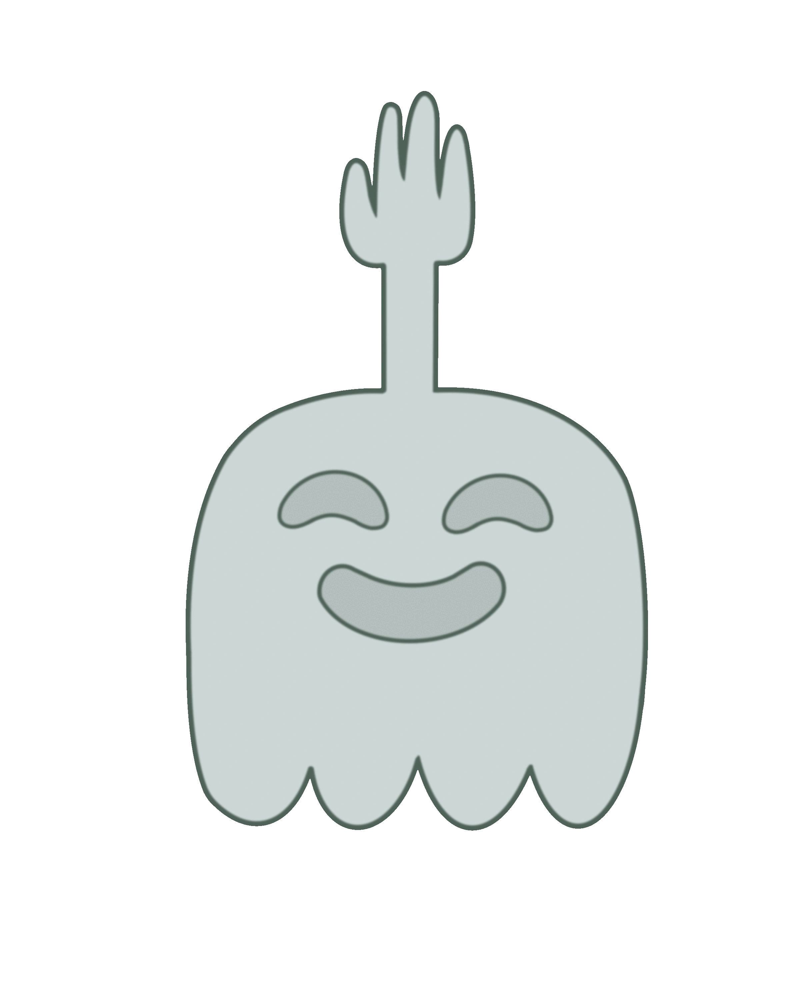

Personaggi Principali
Batti Cinque
Batti Cinque è una mano vivente gigante che è amico intimo di Muscle Man. Lavora anche lui al parco ed è noto per essere più tranquillo e saggio rispetto a Muscle Man, pur essendo coinvolto in molte delle sue bravate.